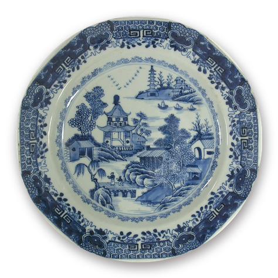

Sunday dinner at
Book Club
★ like game club but for books ★
Book Facts
Agatha Christie learned about poisons working in a hospital pharmacy.❦The Little Prince has been translated into over 500 languages.❦Dr. Seuss wrote Green Eggs and Ham on a bet that he couldn't use only 50 words.❦Libraries in the 1800s often charged a membership fee.
Book Picks
under 150 pagesYour bookmarks 2 of 3 left

picked byMattBest New Horrorfrom 20th Century Ghosts

picked bySarahThe Stinky Cheese Man

picked byKalonThe Little Prince
 awaiting page count
awaiting page countpicked byHannahOf Mice and Men
Still choosing Giselle & Junior
The Book Dropreturned early · one late fee each
NOV 12AnthonyWuthering HeightsLATE